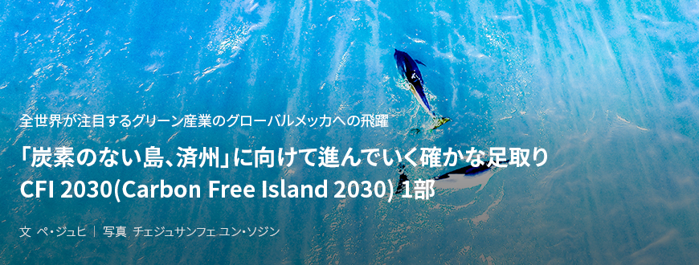
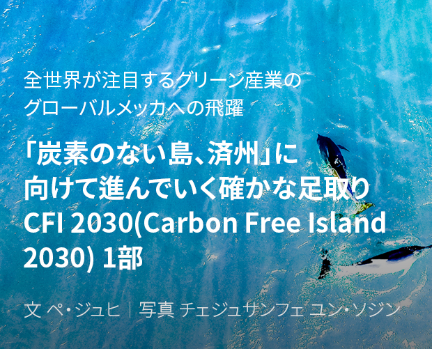
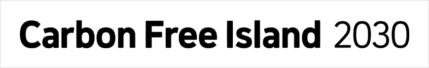
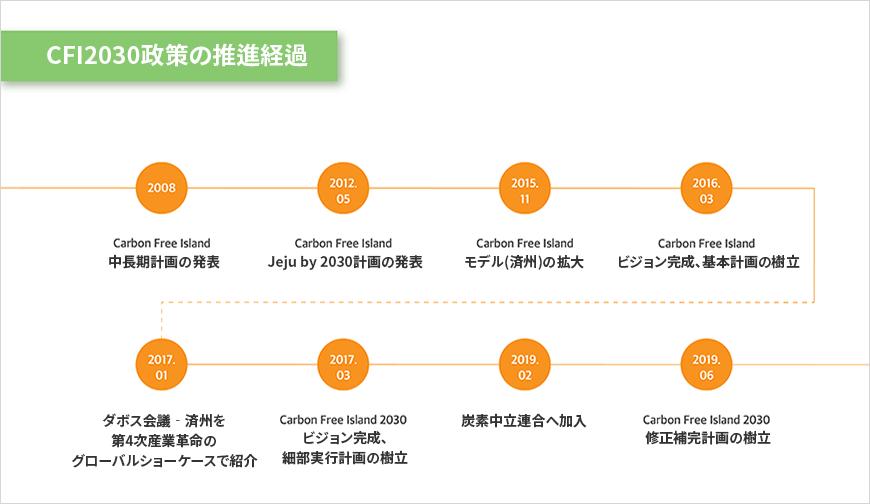
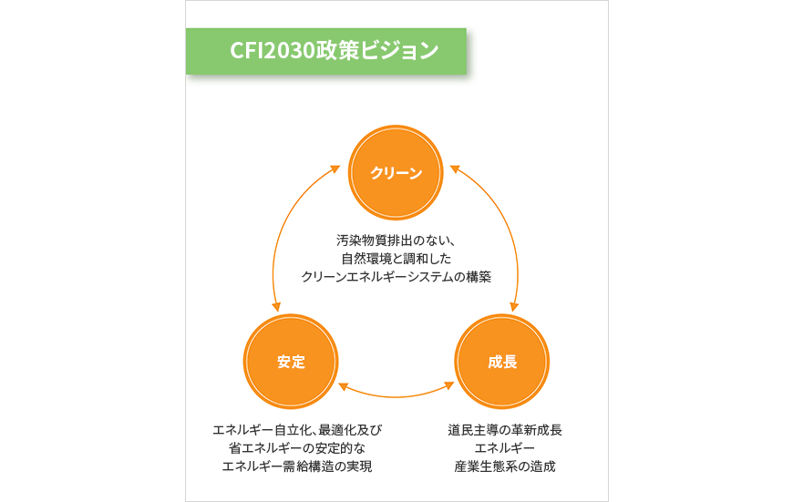
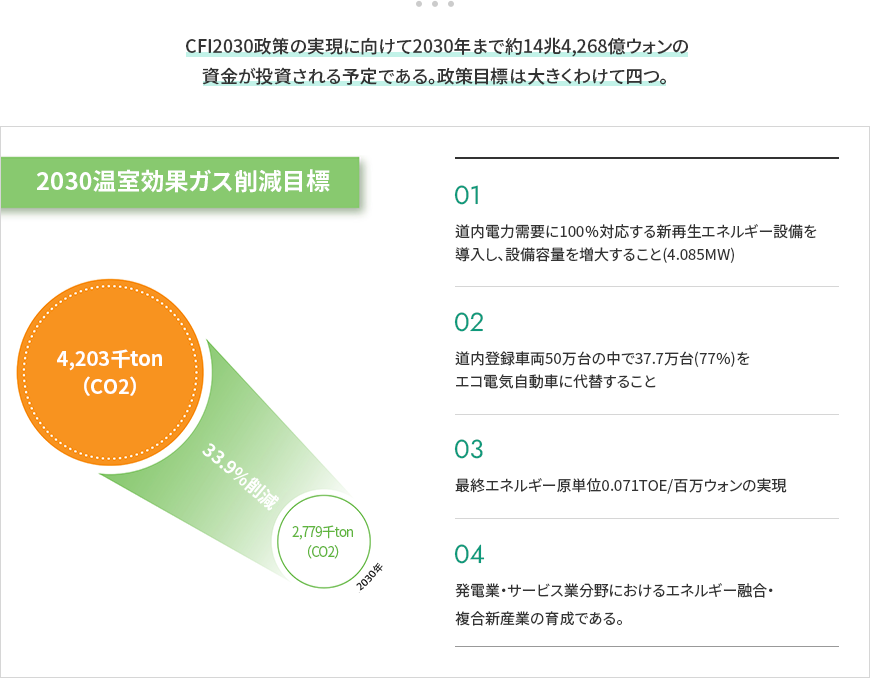

기획취재콘텐츠
- Home
- 제주라이프
- 기획취재콘텐츠
CFI 2030(Carbon Free Island 2030) 1部새로운 글


産業化がもたらした輝かしい遺産は人類に潤沢な暮らしを与えてくれたものの、環境破壊と資源枯渇という問題も残した。異常気象による自然災害が発生するたびに人々の間では「地球が病んでいる」という話がよく話題になる。これは問題の深刻さとこれを改善するための努力の必要性を多くの人が既に認知しているという証拠でもある。無分別な開発と発展で成し遂げる経済成長はもはや美徳ではなく、持続可能性と共存というキーワードが発展の核心として浮上したのである。
1992年、リオデジャネイロで開催された地球サミットの気候変動枠組み条約をはじめとする温室効果ガス削減に向けた世界を挙げての努力がその第一歩を踏み出した。そして今年は、2015年12月に採択されたパリ気候変動枠組み条約が本格的に発効する年で、韓国を含む195の参加国には温室効果ガスの削減が義務付けられている。新気候体制時代、このような国際的な流れに足並みをそろえる形で済州道が積極的に掲げた政策がある。<炭素のない島、済州2030(Carbon Free Island 2030、以下、CFI2030)計画>。これは気候変動時代が求める環境にやさしい産業構造への再編と、安定的な成長を図り、グリーン産業をリードするグローバルメッカへ飛躍するための迅速果敢な動きである。

炭素のない島に向けた済州の迅速な行動、CFI2030
CFI2030計画の始まりは2008年にさかのぼる。国際原油価格が1バレル当たり100ドルに達する原油高時代に備え、済州道では独自の省エネルギー政策と済州に存在する再生可能エネルギーを通じた温室効果ガスの削減及びエネルギー自立の推進を柱とした「Carbon Free Island」という中長期計画を発表した。この名称は2012年5月、多様な政策をまとめた済州型低炭素グリーングロースモデルである計画として発表されたことで世界の耳目を集めた。現在は済州道の最も中核的な政策として展開されている。


CFI 2030 政策の推進経過
- 2008-Carbon Free Island 中長期計画の発表
- 2012.05-Carbon Free Island Jeju by 2030計画の発表
- 2015.11-Carbon Free Island モデル(済州)の拡大
- 2016.03-Carbon Free Island ビジョン完成、基本計画の樹立
- 2017.01-ダボス会議‐済州を第4次産業革命のグローバルショーケースで紹介
- 2017.03-Carbon Free Island 2030 ビジョン完成、細部実行計画の樹立
- 2019.02-炭素中立連合へ加入
- 2019.02-Carbon Free Island 2030 修正補完計画の樹立

CFI2030のビジョンはクリーン、安定、成長という三つのキーワードで表現できる。汚染物質排出のない、自然環境と調和したクリーンエネルギーシステムを構築し、エネルギーの自立化・最適化及び省エネルギーを通じて安定的なエネルギー需給構造を実現し、道民主導の革新成長エネルギー産業生態系を造成するというものである。そのためには新気候体制に突入した国際的な努力に足並みをそろえることはもちろん、道のエネルギーの安定性と自主性を確立し、その過程で道民に有益な産業生態系を造成・成長させ、済州型エネルギー産業構造を強固なものにすることが必要であり、その意志が込められている。

- クリーン：汚染物質排出のない、自然環境と調和したクリーンエネルギーシステムの構築
- 成長：道民主導の革新成長エネルギー産業生態系の造成
- 安定：エネルギー自立化、最適化及び省エネルギーの安定的なエネルギー需給構造の実現


CFI2030政策の実現に向けて2030年まで約14兆4,268億ウォンの資金が投資される予定である。政策目標は大きくわけて四つ。
2030 温室効果ガス削減目標-4,203千ton(Co2) → 2,779千ton(Co2) (33.9%削減)
- 第一は道内電力需要に100％対応する新再生エネルギー設備を導入し、設備容量を増大すること(4.085MW)
- 第二は道内登録車両50万台の中で37.7万台(77％)をエコ電気自動車に代替すること
- 第三は最終エネルギー原単位0.071TOE/百万ウォンの実現
- 第四は発電業・サービス業分野におけるエネルギー融合・複合新産業の育成である

上記の四つの政策目標はCFI2030計画を現実のものにするために中核となる二つの産業軸に収斂する。それは電気自動車産業と新再生エネルギー産業だ。
이전글
이전글이 없습니다.